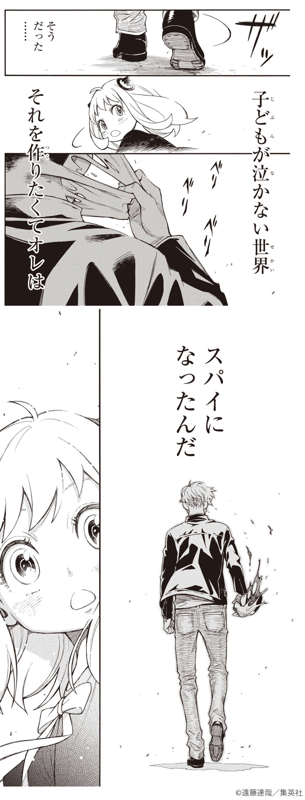

STORY
- 東西の間に鉄のカーテンが下りて十余年、隣り合う東国（オスタニア）と西国（ウェスタリス）の間には仮初の平和が成り立っていた。西国から東国に送られた凄腕スパイ・黄昏（たそがれ）は、東国の政治家ドノバン・デズモンドと接触するため、偽装家族を作ってデズモンドの息子が通う名門イーデン校に養子を入学させる任務オペレーション〈梟〉（ストリクス）を命じられる。黄昏は精神科医ロイド・フォージャーを名乗り、養子を探して孤児院で少女アーニャと出会う。ロイドは知らないがアーニャは心を読むことができ、彼の心を読んで賢いふりをしたため、難関イーデン校に合格できると考えたロイドは彼女を養子にする。実はそれほど賢くないアーニャにロイドは四苦八苦させられるが、なんとか筆記試験に合格。しかし次の面接試験に「両親」揃って来るよう指示されたため、ロイドは急いで妻役の女性を探すことになる。その矢先、二人はヨル・ブライアという女性と出会う。彼女は公務員をする傍らいばら姫のコードネームで密かに殺し屋をしていたが、婚期の遅れを周囲に揶揄され、他人の注目を避けるために形式上の恋人を探していた。心を読む能力によってヨルが殺し屋であることを知ったアーニャは、好奇心からヨルが母親になってくれるよう仕向ける。恋人役を探していたヨルと、妻役を捜していたロイド、そして「わくわく」を求めるアーニャの利害が一致し、3人は互いに素性を隠しつつ、即席の家族としての生活をスタートさせる。
CHARACTER
- 暗号名(コードネーム)
黄昏(たそがれ) - 現在の名前
ロイド・フォージャー - スパイ歴
十数年 - 年齢
不詳(おそらく20代後半)
- 正式名称
被検体007 - 現在の名前
アーニャ・フォージャー - 特殊能力
テレパシー（相手の考えていることがわかる） - 年齢
自称6才（推定4,5才）
- 暗号名(コードネーム)
イバラ姫 - 現在の名前
ヨル・フォージャー - 殺し屋歴
幼少期から - 年齢
27才
FAVORITE SEANE

第１話の終盤のシーンです。誘拐されたアーニャを助けるも泣きじゃくるアーニャ。その姿を見て、ロイドは”だから子供は嫌いなんだ”と心の声で言います。しかしその後、ロイド自身が戦争孤児で泣くことしかできなかった過去を思い出し、スパイになったのは子供が泣かない世界を作るためだと再確認し、敵に再び向かっていくカッコイイシーンです。